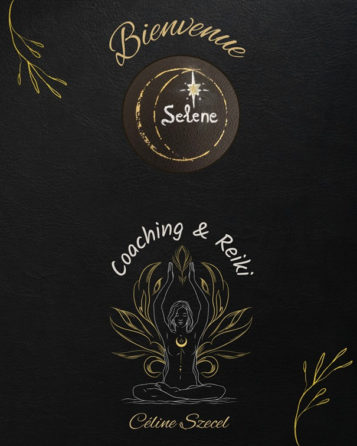

Céline Szecel — Coaching & Reiki (outils intégrés au parcours)
Cherain (Gouvy) & visio

Un parcours en 8 séances, sur 2 à 3 mois, pour traverser une période de surcharge, de transition ou de flou — et retrouver un cap, une stabilité, une énergie plus juste.
Structuré : un cadre clair, des étapes, un fil conducteur.
Personnalisé : on adapte le rythme et le contenu à ta réalité.
Intégratif : coaching + Reiki (si pertinent) + outils d’ancrage.
Autonomie : l’objectif est que tu repartes avec des repères durables.
Tu peux commencer par une séance découverte, puis décider sereinement du parcours.
Prendre rendez-vousIci, on ne “fait pas une séance et basta”. On construit un chemin. Avec douceur, mais aussi avec une structure : compréhension, décisions, actions, et retour à l’autonomie.
Je suis là pour toi — avec respect et clarté. Céline
On fait le point : situation, besoins, objectifs, rythme, priorités.
Coaching + outils d’ancrage. Reiki intégré si cela soutient ton équilibre et ton apaisement.
On stabilise : nouveaux repères, décisions alignées, habitudes soutenantes.
On mesure le chemin, on renforce ce qui tient dans la durée, et tu repars avec un cap.
L’offre centrale
8 séances sur 2 à 3 mois. Un cadre clair, personnalisé, orienté autonomie.
Investissement
1000€ TTC
Paiement possible en 2 fois.
La porte d’entrée
Un premier temps pour faire le point, clarifier ta situation et vérifier si le parcours est pertinent.
Tarif : à définir (tu peux le laisser vide pour l’instant).
Me contacterSoutien ciblé
Coaching ou Reiki selon besoin, en dehors du parcours, quand une séance suffit.
Tarifs : à définir (ou sur demande).
Me contacterJe crois aux accompagnements qui respectent le rythme de chacun, tout en donnant un cadre solide. Mon objectif n’est pas de créer une dépendance, mais de t’aider à retrouver des repères et une autonomie durable.
Le Reiki est un outil de régulation et d’apaisement quand c’est pertinent. Le coaching t’aide à clarifier, décider et avancer. Ensemble, ça fait un parcours complet — ancré et concret.
@Marijke Bisselink
@Marijke Bisselink
@Une touche de joie - Laurence Cordonnier
@Marijke Bisselink
Envie de commencer ?
Écris-moi pour une séance découverte, ou pour vérifier si le Parcours Selene correspond à ta situation.